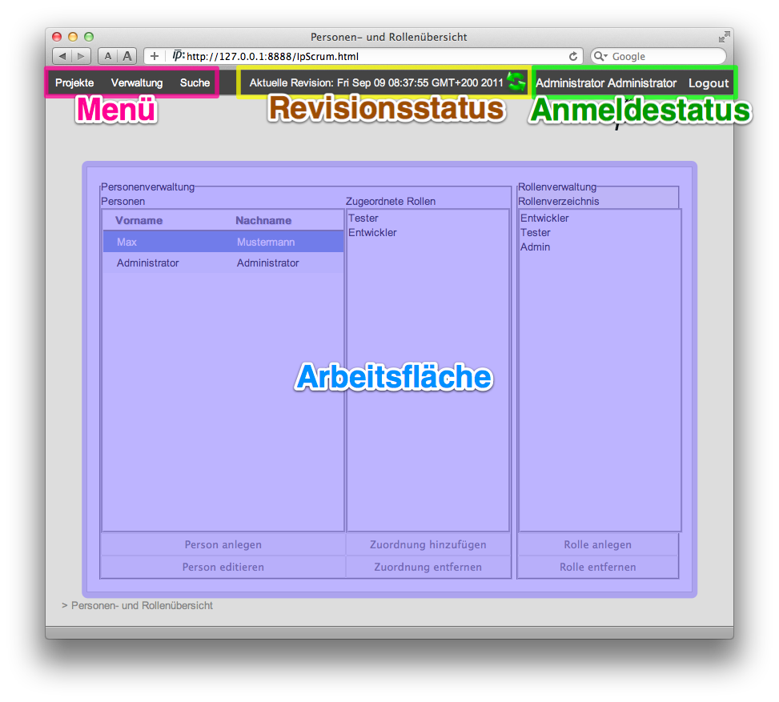
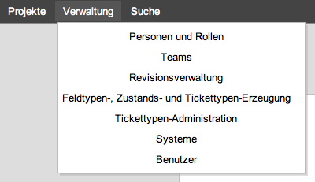
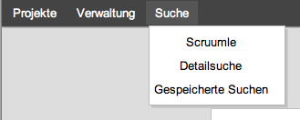

Die Benutzeroberfläche des Programms
Die Oberfläche von IP-Scrum besteht aus einer Arbeitsfläche, die die jeweiligen Anwendungsteile darstellt und einer Navigations-/Statusleiste am oberen Fensterrand.

An der oberen rechten Ecke (grün hervorgehoben) wird stets der Anmeldestatus angezeigt. Hierzu gehören der komplette Name des aktuell angemeldeten Benutzers und der Logout-Button zum Abmelden des angemeldeten Benutzers.
Links daneben (gelb hervorgehoben) befindet sich der Revisionsstatus. Dieses Modul zeigt den Zeitstempel des aktuell geladenen Modells und bietet die Möglichkeit die Modelldaten neu vom Server zu laden (vgl. "Aktualisieren-Button" im Internetbrowser).
In der linken oberen Ecke (pink hervorgehoben) wird die Navigation der Anwendung dargestellt. Hierzu gehören die allgemeine Projektverwaltung, projektübergreifende Verwaltungskomponenten und die Suchmöglichkeiten.
Als zusätzliche Orientierungshilfe wird am unteren Fensterrand stets die aktuelle Arbeitsflächenhierarchie in Form eines Ariadnepfades ("Breadcrumb-Navigation") dargestellt.

Der Menüpunkt "Verwaltung" gibt Zugriff auf die Personen- und Rollenverwaltung, Teamkonfiguration, Revisionsverwaltung, Administration der Feldtypen, Zustände und Tickettypen, Verwaltung der Systeme und Konfiguration der Benutzerkonten.

Die Suche bietet die Möglichkeit, projektübergreifend nach Stichworten zu suchen ("Scruumle"), detaillierte Suchanfragen zu erstellen und auf bereits durchgeführte Suchanfragen zuzugreifen.
Created with the Personal Edition of HelpNDoc: Free CHM Help documentation generator